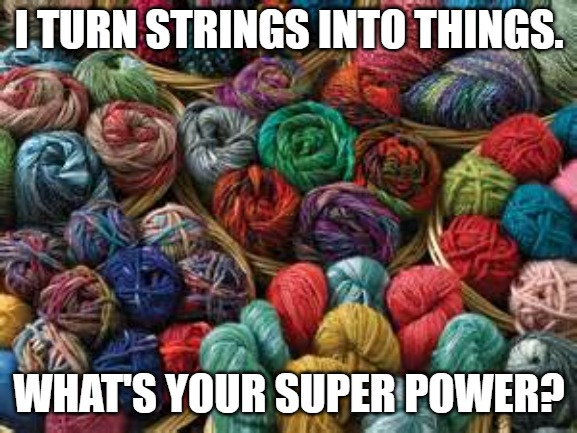
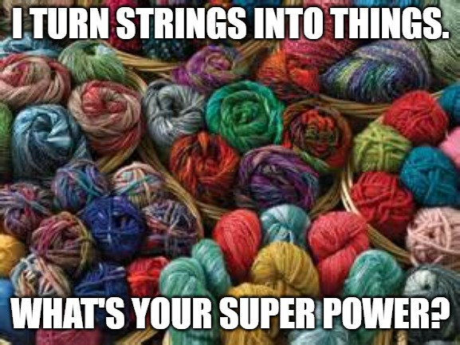

~ About Me ~
 

I've been interested in coding since I started on the path to computer and information technology. I've taken several courses from Independence University based on a bachelor's of science degree in Networking, Security, and Systems Administration. After we started into the coding side of the servers and I learned about SQL, I found the entire coding topic fascinating and wanted to learn more. I thought, people get paid to do this? It's soo simple! So since I am a writer at heart. (I love to write. As I'm sure you can tell.) And since I'm trying to break into the world of technology, I sought to continue my bachelor's degree, but change directions you might say. I strove to get more into the programming side of IT. Unfortuneately, times were tough, and as I didn't have the support system in place that I do now, I was unable to continue pursuing that degree. Sadly only making it about three qaurters of the way through to earning that Bachelor's. Later, in an attempt to still get into the field, I applied to the online certificate school known as "My Computer Career." I decided this after hearing about them on the radio, and hearing all of the wonderful things people had to say about them. That they struggled to break into IT, but after learning with MCC (MyComputerCareer.com), they spoke of how they were not only able to learn the skills necessary to get a job in IT, but to break into the field also. So I signed up. Hoping they could aid me on my quest to become a computer programmer. However, I soon found out, that they did not have any programming courses available. But they did promise that after learning the computer basics with them, I would still be gauranteed a job in tech. And be better prepared in the future to pursue the completion of that bachelor's degree.
Durring this time, I found my soul mate, Angel, and we fell pretty hard for each other. So much so, that he refused to leave my side. And since I was gaining on my years, and worried I might not be able to have children or that if I waited too long, I would not be able to, I foolishly acted carelessly with my birth control... to make a long uneccesary story short, I become pregnant for the first time. And around the age of 33, my son Alistair T. Collins was born. I can still remember times of sitting in front of the computer with my headset on studying hard, while nursing this precious baby boy... Silly. But yeah. I was determined to learn more and keep going. Because I knew that this was what I wanted to do. And I also wanted a way to provide for my new found family!
After about 14 long months, I finally completed the coursework with MyCC. And have just recently recieved my Associates Degree from them in Information Technology and Systems Administration. Plus a few other sweet accomplishements as well. They are a great resource as well, for obtaining certifications! In fact it seems like that was their specialty! While studying with MyCC, I successfully earned two certifications and a slew of educational awards/badges through LinkedIn Learning. I earned a Certification in Microsoft Azure Fundamentals, as well as one in Microsoft Technology and Security Fundamentals. Which was nice... But not my sole aim. And with no experience in the tech industry, I still struggled to find work in IT. Still wishing and preferring to get into coding. After all of that, I have finally been able to get started in code. When I was accepted into the Full Stack Full Flex Coding Bootcamp by the University of Texas at Austin!
Still looking for that job, though. Which is why I'm planning to make a very special coding project that I will believe will get me there! --> "Take A Chance On Me."
Aside from coding, my hobby list is a long one:
- ✂ Crafting
- 🧵 Needlepoint
- 🃏 Poker
- 💟 Quilting
- 👩💻 Learning new Code
- 🧶 Crochet
- 🥻 Garment Sewing
- 💱 Learning Spanish
- 💅 Nail Art
- 📜 Studying
- 🔎 Foraging
- 🧙♂️🏹 Role Playing Games
- 💤 Sleeping
- 📝 Writing
- 💻 Blogging
- 👣 Walking
- 🛠 Building Computers -->which I'm not the greatest at.😞
- ⚓ Model Ships & Boats
- 🎓 Learning
- 🖋🖼 Sketching
- 🖼🖌 Art
- 🤖 Robotics
- 👓 VR/AR Games
- 🤏 Sewing
- 🧘♂️ Yoga
- 💮Cross Stitching
- 📺 Watching Television
- 📼🎥 Movies
- 📘🧚♀️ Creative Writing
- 🎮 Video Games
- 📚 Reading
- ⚜ Embroidery
- 🖖 Star Trek (Trekkie 4-sure)
- 🤴 The British Commedies
- 🐾 Cats
- 🤰🤱 Being a Mom